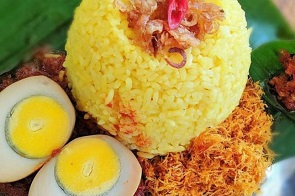

SERVICE
We Propide Better
We Propide Better

Sarapan
Semua kebahagiaan tergantung pada sarapan yang tenang.Sebab kita selalu mandiri pada pagi yang tak lagi akrab dengan sarapan ibu.

Kuliner Malam
Makan malam yang enak harusnya tidak hanya mencakup makanan enak, tetapi percakapan yang baik
Camilan
Kita tidak menjadi gemuk karena kita makan berlebihan; kita makan berlebihan karena kita menjadi gemuk
Legendaris
Makanan adalah segalanya bagi kita. Ini merupakan perpanjangan dari perasaan nasionalis, perasaan etnis, sejarah pribadimu, provinsimu, daerahmu, sukumu, nenekmu. Itu tidak dapat dipisahkan sejak awal.